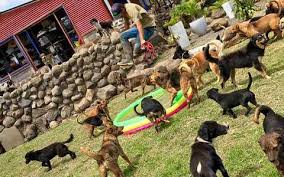
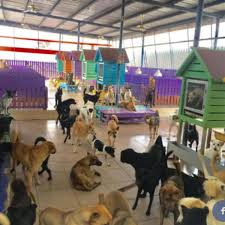
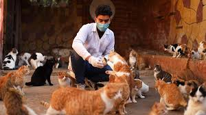
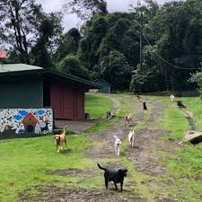

Casas Cuna
¡Dale una segunda oportunidad a un amigo peludo! Ofrecemos perros y gatos en busca de un hogar amoroso.

Adoptame Liberia
Dueño: Laura Gonzáles
Contacto: 2669-4879
Dirección: Calle Esperanza 56, Ciudad Creativa
Información: Rescata y adopta mascotas que necesitan una familia.

Adoptame Cañas
Dueño: Roberto Fernández
Contacto: 2668-7747
Dirección: Avenida Libertad 90, Ciudad Amistad
Información: Un lugar donde los peludos encuentran su hogar ideal.

Adoptame Santa Cruz
Dueño: Isabell Jimenez
Contacto: 8765-9809
Dirección: Barrio Chamorga Santa Cruz
Información: Rescata y adopta mascotas que necesitan una familia.

Adoptame Upala
Dueño: Laura Gonzáles
Contacto: 8127-9087
Dirección: Upala centro
Información: Rescata y adopta mascotas que necesitan una familia.